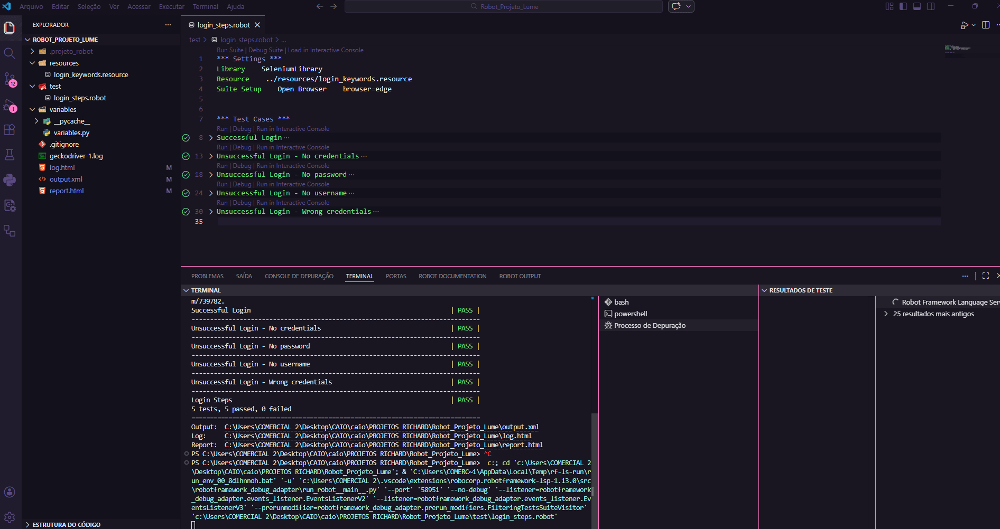
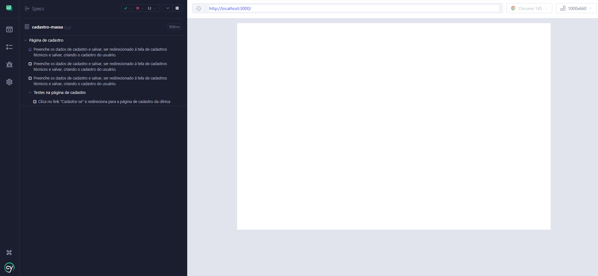
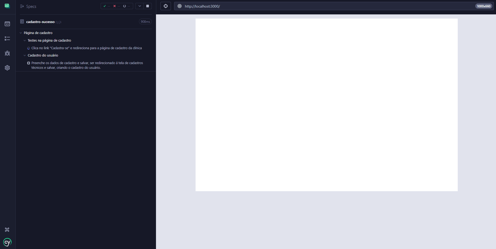
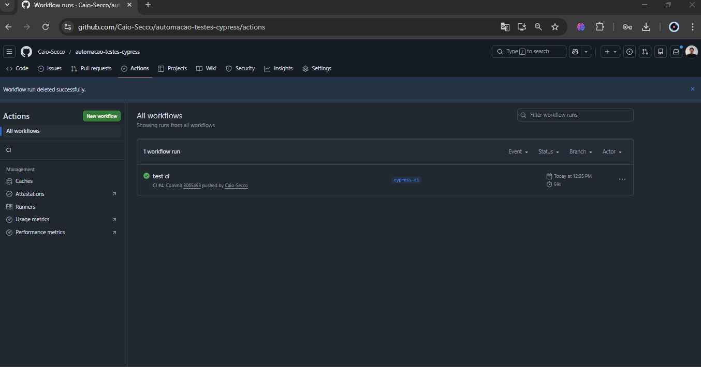

Olá, eu sou Caio
Transformando qualidade em software confiável.
Especialista em testes manuais, automação E2E, validação de APIs e melhoria contínua da qualidade de aplicações.
.png)
Minha trajetória
Sou Analista de Qualidade de Software (QA) com
4 anos de experiência na
validação de aplicações Web,
testes de APIs e
automação de testes.
Atuo em todo o ciclo de qualidade, da criação de cenários e execução de
testes à identificação de falhas, validação de regras de negócio e
acompanhamento das entregas junto aos times de desenvolvimento.
Tenho experiência prática consolidada com
testes manuais,
Postman,
Cypress,
Robot Framework e
Appium,
aplicando automação e integração de testes em ambientes modernos
para garantir entregas mais rápidas e confiáveis.
Também domino
JavaScript,
Python,
Git e
CI/CD,
unindo conhecimento técnico a boas práticas de desenvolvimento
para atuar com mais autonomia e profundidade dentro dos times.
Minha vivência com implantação de sistemas ERP e
integrações entre aplicações me deu uma visão de negócio pouco comum
em QA: entendo não apenas se uma funcionalidade funciona, mas o real
impacto da qualidade no negócio e na experiência do usuário.
Estou em constante evolução na área de
Quality Assurance,
sempre em busca de soluções que aumentem a confiabilidade,
a segurança e a estabilidade dos sistemas que ajudo a construir.
QA
Quality Assurance
E2E
Automação
API
Testes e validações
Tecnologias
Ferramentas utilizadas para garantir qualidade, automação e entrega contínua.
Cypress
Robot Framework

Appium
Postman
Insomnia

JavaScript

Python
Node.js
MySQL
Postgres

HTML

CSS

Git
GitHub Actions
Automação & Desenvolvimento
Projetos práticos aplicando qualidade, automação e boas práticas.

Automação E2E com Cypress
Automação End-to-End utilizando Page Objects, Fixtures e Custom Commands para validação de fluxos críticos.

Robot Framework
Automação Web estruturada utilizando keywords, variáveis externas e organização por camadas.

Fixtures e Custom Commands
Estrutura reutilizável de testes utilizando dados externos e comandos personalizados.

Automação Web Cypress
Testes automatizados para validação de fluxos funcionais.

Pipeline CI/CD
Execução automática de testes através de integração contínua.

Site de Equipamentos
Projeto front-end com foco em layout, organização e experiência do usuário.
Vamos conversar?
Estou disponível para oportunidades, projetos e conexões profissionais.